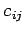
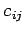

Inhalt Index DeskTop Bronstein

 Optimierung Lineare Optimierung Spezielle lineare Optimierungsprobleme Transportproblem
Optimierung Lineare Optimierung Spezielle lineare Optimierungsprobleme Transportproblem


Ein von m Erzeugern  in den Mengen
in den Mengen  produziertes Erzeugnis soll zu n Verbrauchern mit dem Bedarf transportiert werden. Die Kosten des Transportes einer Produkteinheit vom Erzeuger Ei zum Verbraucher Vj betragen . Von Ei werden xij Produkteinheiten zu Vj transportiert. Gesucht ist eine, die Transportkosten minimierende Aufteilung der Erzeugnisse auf die Verbraucher. Es wird vorausgesetzt, daß die Gesamtkapazität der Erzeuger gleich dem Gesamtverbrauch ist, d.h.
produziertes Erzeugnis soll zu n Verbrauchern mit dem Bedarf transportiert werden. Die Kosten des Transportes einer Produkteinheit vom Erzeuger Ei zum Verbraucher Vj betragen . Von Ei werden xij Produkteinheiten zu Vj transportiert. Gesucht ist eine, die Transportkosten minimierende Aufteilung der Erzeugnisse auf die Verbraucher. Es wird vorausgesetzt, daß die Gesamtkapazität der Erzeuger gleich dem Gesamtverbrauch ist, d.h.
Man bildet die Kostenmatrix  und die Verteilungsmatrix :
und die Verteilungsmatrix :
| (18.24a) |
| (18.24b) |
Ist die Bedingung (18.23) nicht erfüllt, dann werden zwei Fälle unterschieden:
| (18.25a) |
| (18.25b) |
Das Minimum dieses Problems wird in einer Ecke des zulässigen Bereiches angenommen. Von den m+n Nebenbedingungen sind m + n - 1 linear unabhängig, so daß eine Ecke im nicht entarteten Fall, der hier vorausgesetzt werden soll, m + n - 1 positive Komponenten xij besitzt. Die folgende Bestimmung eines optimalen Verteilungsplanes wird als Transportalgorithmus bezeichnet.